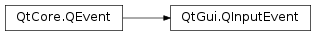

QInputEvent¶
Inherited by: QMouseEvent, QHoverEvent, QContextMenuEvent, QTouchEvent, QWheelEvent, QTabletEvent, QNativeGestureEvent, QKeyEvent
Synopsis¶
Functions¶
- def
modifiers() - def
setModifiers(amodifiers) - def
setTimestamp(atimestamp) - def
timestamp()
Detailed Description¶
ThePySide2.QtGui.QInputEventclass is the base class for events that describe user input.
-
class
PySide2.QtGui.QInputEvent(type[, modifiers=Qt.NoModifier])¶ Parameters: - type –
PySide2.QtCore.QEvent.Type - modifiers –
PySide2.QtCore.Qt.KeyboardModifiers
- type –
-
PySide2.QtGui.QInputEvent.ts¶
-
PySide2.QtGui.QInputEvent.modifiers()¶ Return type: PySide2.QtCore.Qt.KeyboardModifiersReturns the keyboard modifier flags that existed immediately before the event occurred.
See also
-
PySide2.QtGui.QInputEvent.setModifiers(amodifiers)¶ Parameters: amodifiers – PySide2.QtCore.Qt.KeyboardModifiersSets the keyboard modifiers flags for this event.
-
PySide2.QtGui.QInputEvent.setTimestamp(atimestamp)¶ Parameters: atimestamp – PySide2.QtCore.ulongSets the timestamp for this event.
-
PySide2.QtGui.QInputEvent.timestamp()¶ Return type: PySide2.QtCore.ulongReturns the window system’s timestamp for this event. It will normally be in milliseconds since some arbitrary point in time, such as the time when the system was started.
© 2018 The Qt Company Ltd. Documentation contributions included herein are the copyrights of their respective owners. The documentation provided herein is licensed under the terms of the GNU Free Documentation License version 1.3 as published by the Free Software Foundation. Qt and respective logos are trademarks of The Qt Company Ltd. in Finland and/or other countries worldwide. All other trademarks are property of their respective owners.